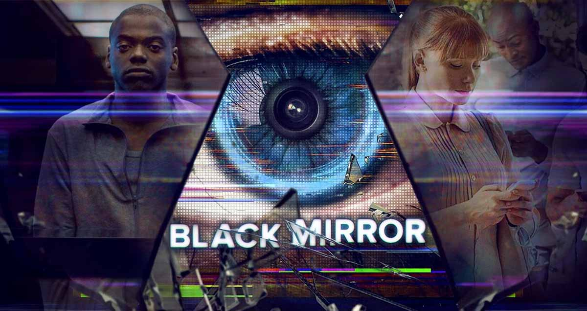

Vikings

8. yüzyıl İskandinavyası’nda geçen dizi, basit bir çiftçiyken cesur bir savaşçıya dönüşen Ragnar Lothbrok ve ailesinin öyküsünü ekranlara taşıyor. Savaş Tanrısı Odin'in soyundan geldiğine inanılan Ragnor’un acımasız ve korkusuz adamlarıyla birlikte denizlerle olan imtihanını seyrederken; savaşçı ve tüccar bir kavim olan Vikingler’in çok az işlenmiş ilgi çekici kültürüne hep birlikte tanık oluyoruz.
Black Mirror
3 bölümden oluşan mini dizinin her bir bölümü bir başka hikayeyi anlatıyor. İlk bölüm, sosyal medyanın başa bela olabileceğini gösterirken, ikinci bölüm televizyondaki yarışmaların birgün varabileceği noktaya parmak basıyor. Üçüncü bölüm ise; yakın bir gelecekte insanlar taktırdıkları hafıza çipleri sayesinde tüm hayatlarını depolayabilmektedirler. Hiçbir şey unutulmuyor, hiçbir ayrıntı atlanmıyordur. Peki ya bu, iyi bir şey midir?